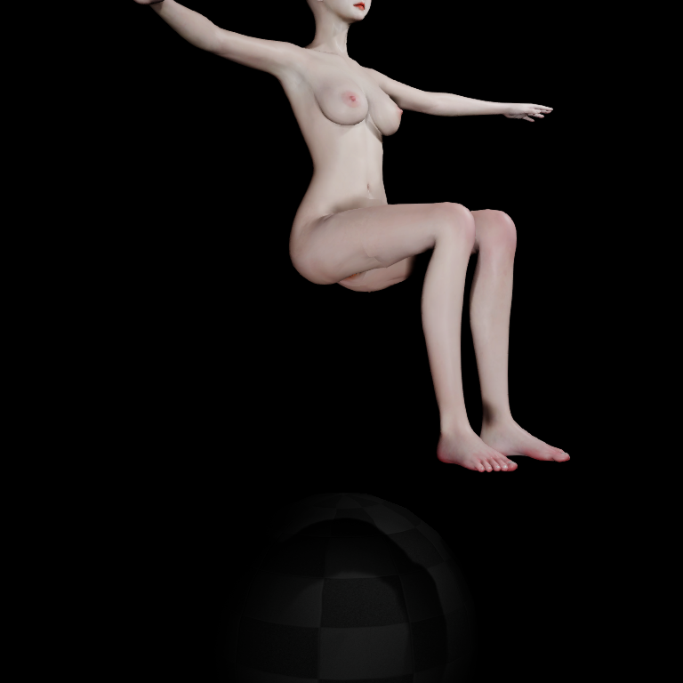
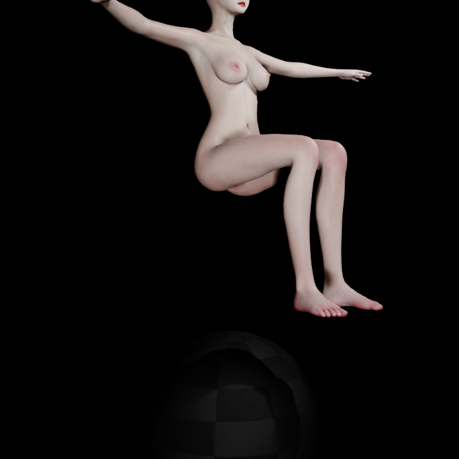
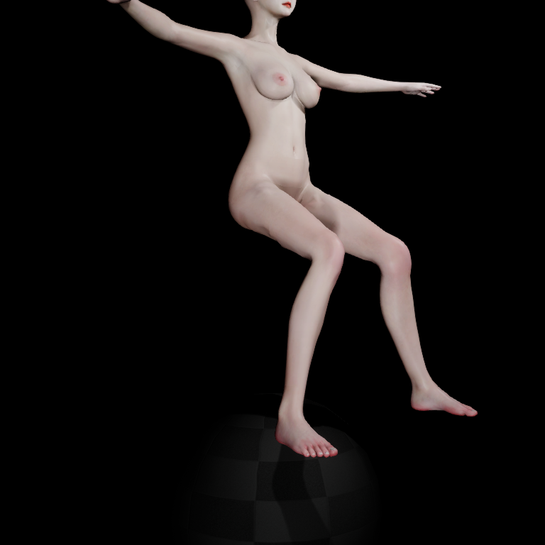

Jiggle 大腿褶皱：根因与真实运动录像
结论
主要根因已定位：腿部动态权重在 8 个骨骼影响槽位边界发生跳变。 静态蒙皮可以连续，但开启腿部 Jiggle 后，相邻顶点跟随完全不同的动态骨骼，形成局部硬折线。
本次完成原因调查与实际运动录像。动态权重缺陷尚未修复；没有将“只开臀部”的诊断对照作为正式解决方案，也没有修改已验收角色的生产权重、Corrective 或安全保护。
最早出现在哪一层
同一坐姿、同一源拓扑边 11274—16801，相邻两个三角面的法线夹角：
| 阶段 | 夹角 |
|---|---|
| 源 contract LBS | 12.19° |
| 最终权重 | 21.04° |
| 静态辅助骨 | 18.69° |
| Corrective | 21.34° |
| Jiggle | 46.53° |
A1 的 Corrective 与 Jiggle 两层 pre-skin 顶点完全相同；冻结这份输入，仅替换实际辅助骨矩阵，即可重建褶皱。静态层并非完全平面，但明显的新增折线出现在 Jiggle 层。
同边的冻结矩阵消融：仅臀部 19.90°，仅腿部 47.86°，两者 46.53°。此表是离线归因；下表来自独立真实 PIE 运行。
真实 PIE 消融
保留 Structure、Corrective；Contact 关闭；Breast Jiggle 关闭。测量固定 bind-space 大腿带，使用保留的 source→render 映射。
| 状态 | 坐姿最大夹角 | 外展最大夹角 |
|---|---|---|
| Jiggle 前的 Corrective 表面 | 24.01° | 25.52° |
| 臀腿开启、角色静止 | 47.88° | 49.22° |
| 臀腿开启、上下运动 | 46.53° | 48.80° |
| 仅腿部、上下运动 | 47.86° | 49.03° |
| 仅臀部、上下运动 | 23.75° | 24.71° |
因此静止重力下垂就能触发，不是只有急停才出现。8 个状态的测量带均没有相对静态辅助骨表面反向的三角面；这不是完整自相交检查，不能据此宣布整个身体没有穿插。45° 仅用于追踪异常尖锐边，不是人体通用合格阈值。
生成链路的确定证据
Source/VamResourceBrowser/Private/VamLegJiggleBuilder.cpp 的 BlendLegWeights()：以 Slots=8-W.Num() 决定能否加入腿部辅助骨；Slots 为 0 直接返回。只剩一个槽位时，将全部要转移的腿部权重归入最强的一个区域骨骼。
| 实际逻辑顶点 | 输入槽位 | 腿部转移结果 |
|---|---|---|
| 11274 | 8 | 完全跳过，没有腿部辅助骨 |
| 16801 | 7 | 新增 R_Thigh_Hamstrings，权重 0.6075196 |
独立重放保存了 00-glute-input.json 与 01-leg-transfer.json，上述权重从生成阶段就存在。最终角色量化权重为 0 与 0.6075227。16801 的 UV/材质复制顶点 24034 结果一致，所以这个探针不是复制点没有 Weld 导致的裂口。
在原始冻结帧，腘绳肌辅助骨位移约 (-0.711, 0.007, -1.486) cm，给 16801 带来约 (-0.432, 0.004, -0.903) cm 的加权位移；11274 没有这项运动。保留静态臀部骨骼原本是为了保护已验收形态，但“只用空余槽位”的分配策略引入了新的动态边界。
录像如何解读
三段均为正常生成的 BP_VamCharacter、真实 PIE 求解与 SceneCapture 输出。每段 6 秒、30 fps、180 帧、768×768。固定 1/60 秒模拟步长，每两步保存一帧；编码时长不代表实时性能测试。
先静止预热 120 步，随后 0–3 秒以 1 Hz、2 cm 幅度上下运动，前 0.5 秒逐渐启动；3 秒停止，观察后 3 秒回弹。相机、坐姿、材质、下方灯光一致。同步放大录像从左到右为：臀腿同时开启 → 仅腿部 → 仅臀部。
每帧保存 root 位移和臀/腿辅助骨矩阵。只开臀部时，腘绳肌辅助骨在录像中的平移范围为 0；只开腿部时 Z 方向范围约 0.317 cm，证明动画中的动态层确实独立切换。
验证、限制与修复方向
UE C++ 编译成功；Vam.Breast.ContactRuntime 自动化成功；8 个 PIE 状态完整导出；3 段原始录像及同步对比均核验 180 帧 / 6 秒。当前资产身份为 26c92372d157d5e374d254c0531789b4273a177e72d7255e7e0a1d96948a224f，来自已验收 candidate-3，没有重新生成或覆盖生产资产。
独立权重重放的附加 RegionWeights Python 反射读取失败；失败发生在权重文件写出之后。原始失败日志保留；随后在独立进程成功读取原始拓扑映射。仅使用得到验证的早期权重转移数据，不把该辅助脚本声明为完整构建验收。
修复应消除“槽位数决定是否有动态”的硬切换，使腿部动态位移在臀腿交界连续，同时保持现有静态臀部支撑。需要评估增加有效影响预算或分离动态位移通道；不能简单逐点删除臀部骨骼、全局平滑、降低振幅或关闭 Leg Jiggle。改变生产权重后必须重新烘焙 Corrective 并重新验证资产身份。
本次结论限于用户标记的大腿褶皱。历史接触、其他材质斑块和全身自相交不在本次通过范围。
真实 UE 运动对照
同步局部：左＝臀腿开启，中＝仅腿部，右＝仅臀部。前 3 秒上下运动，后 3 秒停止回弹。
臀腿开启 · 完整画面
仅腿部 · 完整画面
仅臀部 · 完整画面
相同条件截图



PIE 与录像验证 · 8 槽位生成证据 · 分层归因 · 8 个状态的全部角度